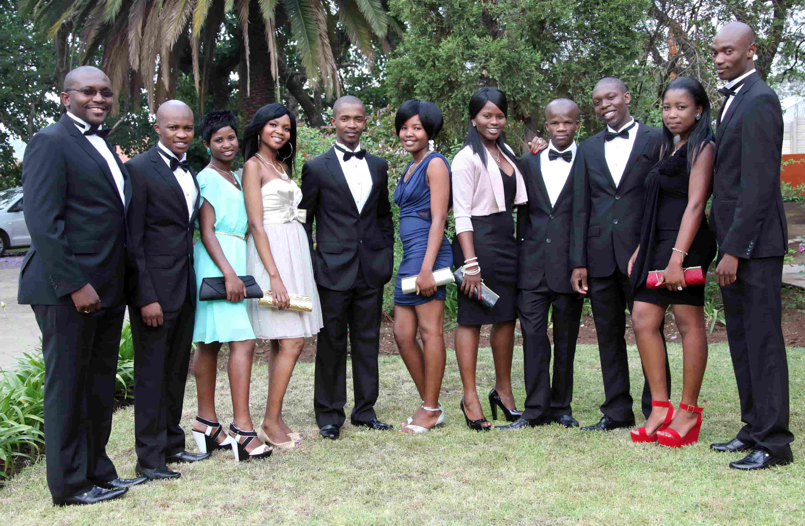
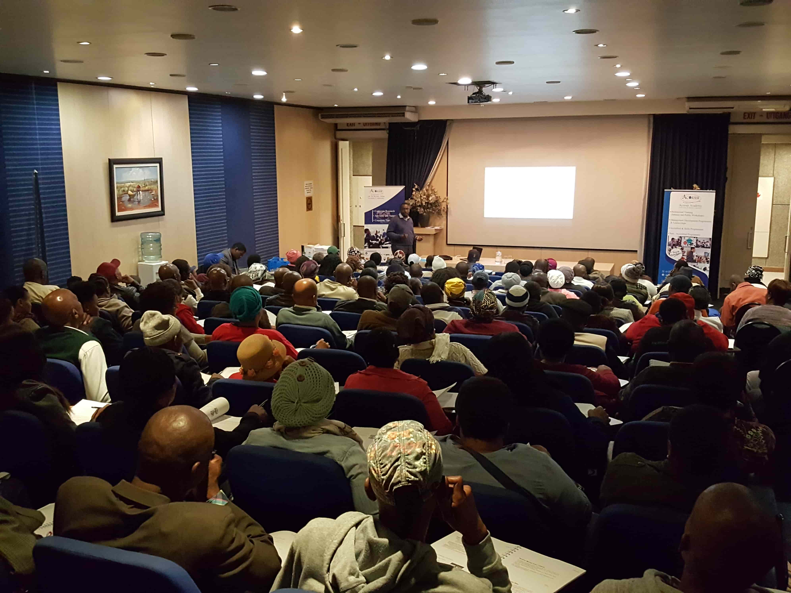
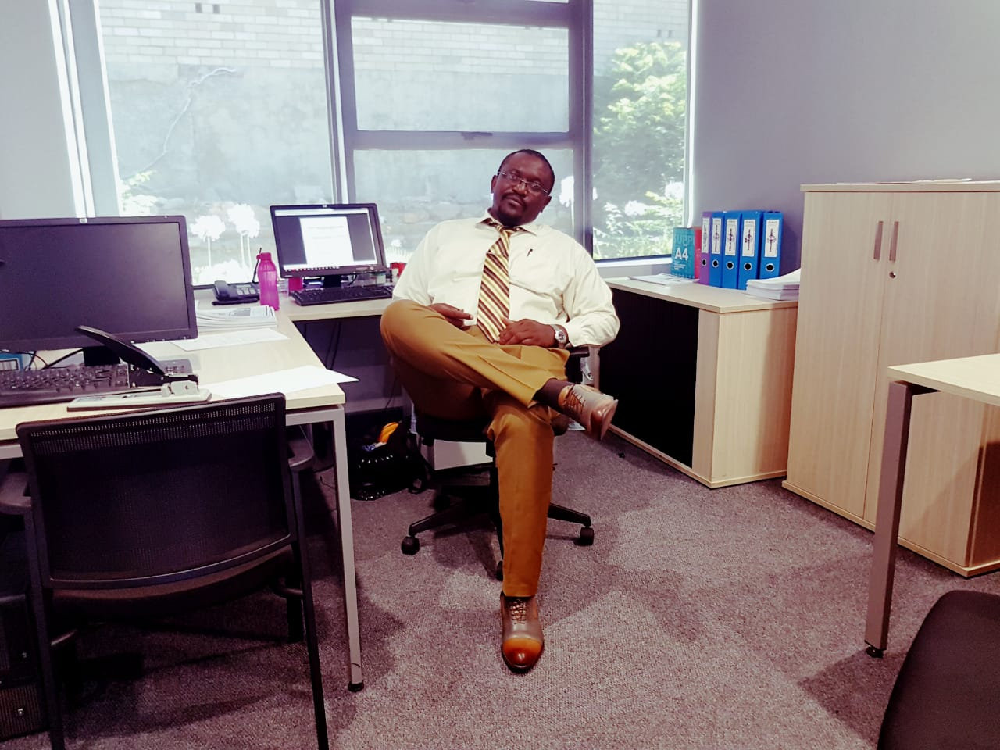

Nico Halle & Co Law Firm
Research, motions, affidavits, IP registration (trademarks, patents). Expert advice on international trade, shipping, banking, insurance, taxation.
IP LawTaxation
Stellenbosch University · EESA
Business consultancy for emerging enterprises in Western Cape. Joint program with Syracuse University (USA). Focused on SMME development and strategic planning.
ConsultancySMME
CIDA City Campus · Johannesburg
Taught Commercial Law, Employment Law, Media Law, Entrepreneurship in non-profits, Marketing Research. Developed course materials and assessment frameworks.
Commercial LawMedia Law
University of Johannesburg · CSBD
Developed and facilitated course on entrepreneurship and new venture creation. Researched informal business formalization and regulatory pathways for SMMEs.
EntrepreneurshipResearchCIDA City Campus · Johannesburg
Strategic leadership, academic strategy, curriculum development, regulatory compliance (CHE, DHET, DoL), financial management, stakeholder relations and board governance.
Academic leadershipCurriculum
Acorser Corporate & Business Consulting
Research, corporate training, compliance management, QMS design. Designed training solutions in leadership, governance, risk assessment, and organisational development.
TrainingComplianceM Njah Attorneys t/a Acorser Legal Inc
Civil & commercial litigation, conveyancing, notarial practice, administration of estates. Drafting, research, lower court appearances, and client advisory.
LitigationConveyancing